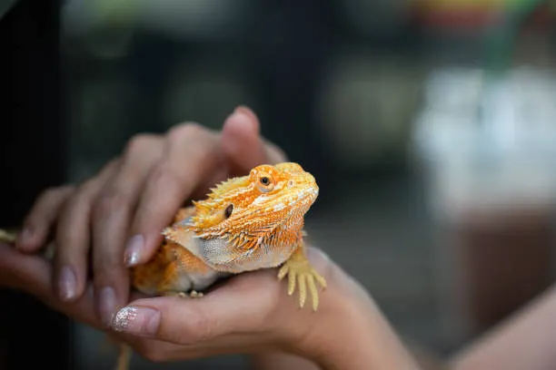

Reptiles
Pueden necesitar condiciones específicas de temperatura, iluminación y alimentación.
Revista Digital
SECCIÓN 03
Animales diferentes que requieren cuidados específicos.

UN MUNDO DIFERENTE
Algunas personas conviven con animales que requieren cuidados diferentes a los de las mascotas tradicionales.
Antes de incorporar un animal exótico al hogar, es fundamental informarse sobre sus necesidades, su origen y la normativa correspondiente.
Pueden necesitar condiciones específicas de temperatura, iluminación y alimentación.
Necesitan espacio, alimentación adecuada y estímulos para mantenerse activas.
También requieren ambientes adecuados y cuidados específicos.
Informarse es una parte fundamental de la tenencia responsable. No todos los animales tienen las mismas necesidades ni todos son adecuados para cualquier hogar.